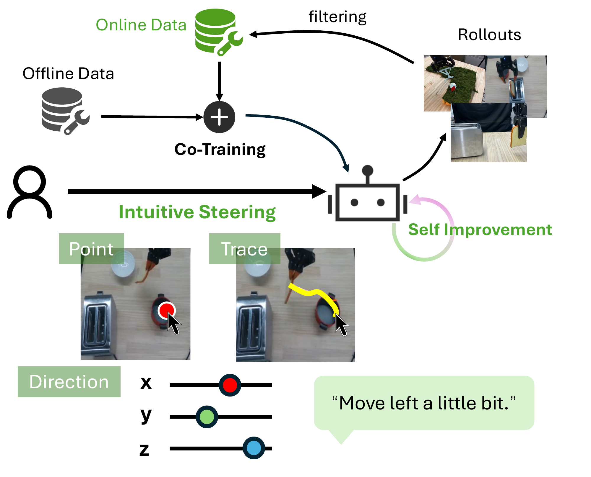
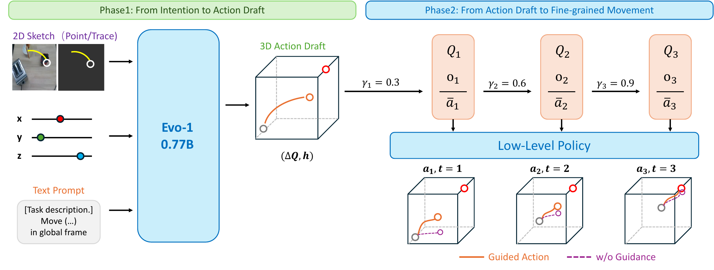
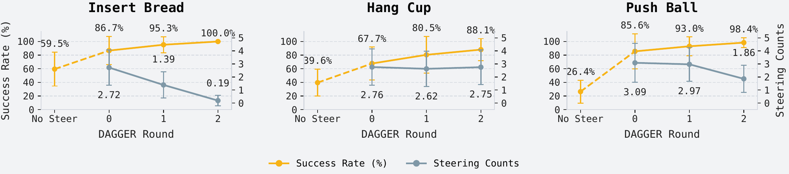
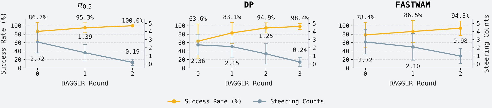

From prompt to action draft
A reusable 0.77B-parameter steering model translates points, traces, and coarse directions into a continuous 6D action draft.
A trace, a point, or a rough direction.

Robot policies can do a lot. But when a motion goes wrong, telling the robot exactly how to recover is still surprisingly hard.
RoboPrompt makes that correction as simple as a point, a sketch, or a direction. A lightweight module translates your intent into an action draft; the robot's own policy refines it into fine-grained movement.
No specialized teleoperation hardware. No architectural changes or steerability fine-tuning of the base policy.
One plug-and-play module for various policies,
without fine-tuning the base policy.
Steer the next move, then let the policy
get on with the task.
A short trajectory drawn on the camera view guides the robot toward the toaster. The base policy refines the motion for insertion.
Original experiment footage; playback speed varies as labeled in the video.
Beyond the image plane. Coarse directional prompts also specify motion in the robot's global X, Y, and Z axes.
A reusable 0.77B-parameter steering model translates points, traces, and coarse directions into a continuous 6D action draft.
The base policy refines the draft through diffusion or flow matching. Progressive denoising gradually returns control to the policy.

A smooth handoff. Noise-Augmented Flow Reversal Steering balances the human draft and policy prior, while Progressive Biased Denoising carries a prompt across multiple action chunks.
The Phase I steering model is trained on 500 play-data episodes collected on the same robot platform. Each training window pairs the current observation with the robot's executed future motion.
Project future end-effector poses into the camera image: the final position becomes a point label, and the connected positions become a trace. Sum and normalize XYZ displacements to produce a coarse directional instruction.
The 0.77B Evo-1 model receives the prompted camera image, a separate prompt-only image, and the task instruction. Directional prompts are appended as text. Training combines action prediction with point, trace, and direction supervision; position and scale perturbations accommodate imprecise human input.
Corrected rollouts become training data.
TOT filtering selects higher-quality examples
for the next round of DAgger.
Across Diffusion Policy, π0.5, and FastWAM in steering experiments.
2.86 to 1.60 on average for π0.5 across three tasks after DAgger.
Steered rollouts improve the policy through at most three DAgger iterations in our experiments.


Results reported in the paper. Prompt alignment measures agreement on the dimensions specified by each prompt; it is not the task success rate.